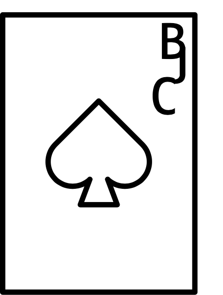

<ion-header>
  <ion-navbar>
    <button ion-button menuToggle>
      <ion-icon name="menu"></ion-icon>
    </button>
    <ion-title>Home</ion-title>
  </ion-navbar>
</ion-header>

<ion-content class="bg">
  <!--<div class="bg"></div>-->
  
  <p>{{ marsReports$ }}</p>

</ion-content>
